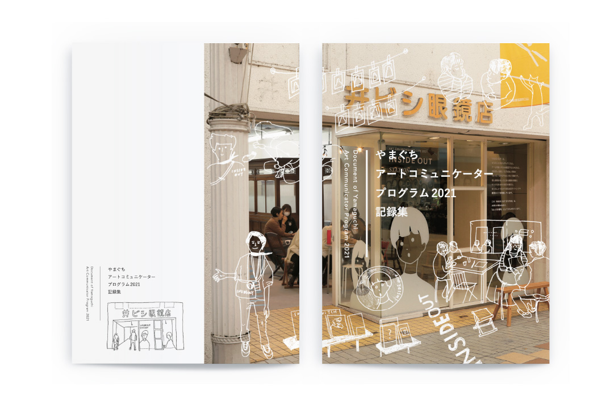

やまぐちアートコミュニケータープログラム2021
Twelve Inc. / 山口情報芸術センター
ブックレット
2022. 05

ブックレット
2022. 05
山口情報芸術センターYCAMで開催された「やまぐちアートコミュニケータープログラム」のスタートとなった、2021年度の記録集。
坂本龍一+高谷史郎+YCAMによる展覧会『ART‒ENVIRONMENT‒LIFE 2021』にあわせて開催されたプログラム。公募で集まった市民が、対話型鑑賞やワークショップの企画立案といった 、アートにまつわる教育プログラムを形作るための研修を複数回にわたって受講し、身につけた知見や発想をもとに、展覧会会期中アートコミュニケーターとして自ら企画したイベントを実践していきました。
公的なアーカイブとして、読みやすさと活動中の写真を多用することを意識しつつも、参加者のひとりが描いたイラストを要所で配置し、面白みを感じさせるアクセントとしました。
＜ BACK
© Moeri Ito